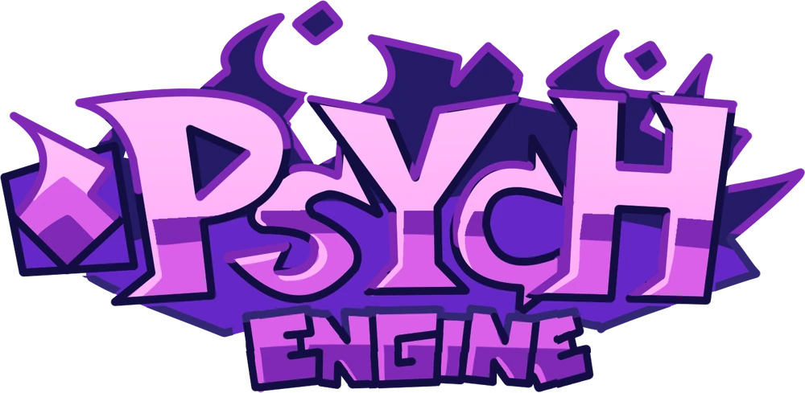

Es una herramiento para convertir charts de FNF entre los engines oficial (populamente conocido como Vslice), Codename y Psych con exportacion de eventos incluido

Aplicacion para etiquetar musica
Una aplicacion TUI creada en textual con python que te permite crear archivos que se pueden convertir una carpeta completa con las canciones y etiquetas indicadas
Crea un Archivo con la TUI o con un editor de texto
Elige las canciones del archivo que quieres generar
Espera la descarga y la etiquetacion de las canciones